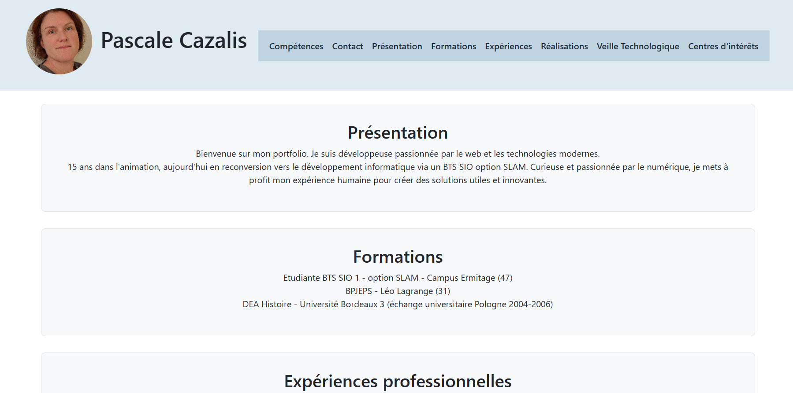
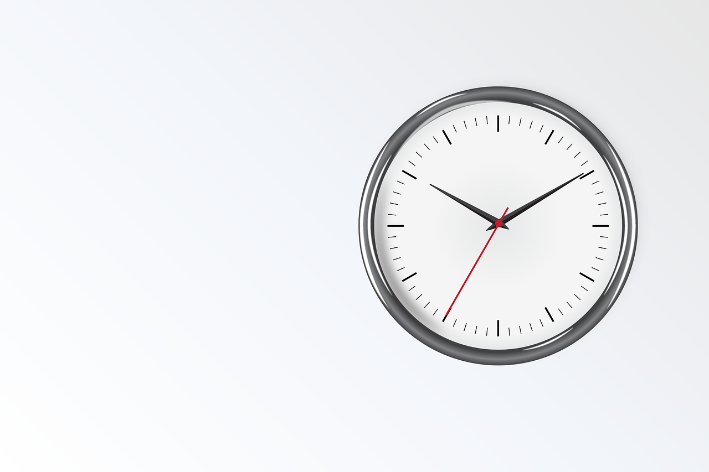

Présentation
Bienvenue sur mon portfolio. Je suis développeuse passionnée par le web et les technologies modernes.
15 ans dans l'animation, aujourd'hui en reconversion vers le développement informatique via un BTS SIO option SLAM.
Curieuse, je mets à profit mon expérience humaine pour créer des solutions utiles et innovantes.
Formations
- Etudiante BTS SIO 1 - option SLAM - Campus Ermitage (47)
- BPJEPS - Léo Lagrange (31)
- DEA Histoire - Université Bordeaux 3 (échange universitaire Pologne 2004-2006)
Expériences professionnelles
- Stage D2Com - Le Passage (47)
- Directrice périscolaire Clairac
- Directrice adjointe Tonneins
Réalisations

Page de capture email responsive chez D2Com

Création de mon Portfolio

Projet à venir
Veille Technologique
Je réalise une veille technologique régulière pour suivre les évolutions du développement web et des outils numériques. Cette démarche me permet d’anticiper les tendances et d’intégrer des solutions innovantes dans mes projets.
Centres d'intérêts
Bénévolat association La Compagnie des Tours.
Organisation des Fêtes médiévales à Bruch (47)